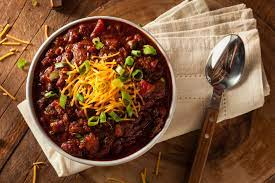

Texas Chili

Description
Texas Chili sounds fantastic, although I've never personality had the opportunity to try this dish, I've heard nothing but glowing reviews. The flavor, texture, the spice, people love it all with this Texas Chili!
Ingredients
- Dried chile peppers
- Chipotle pepper
- Canola oil
- Boneless beef chunk roast
- Kosher salt
- Black pepper
- Yellow onion
- Minced garlic cloves
- Ground cumin
- Ground cinnamon
- Water
- Masa Harina
- Beef stock
- Bay leaves
- White vinegar
- Dark brown sugar
- Sour cream
- Lime
Steps
- Gather all ingredients.
- Place peppers in a large skillet and heat over medium-low heat; cook, turning once, until lightly toasted and fragrant, 2 to 3 minutes per side. Transfer chiles to a bowl and cover with hot water; let stand for 30 minutes.
- Drain chiles, reserving about 1/2 cup of the soaking water. Use a paring knife to slice open each pepper, and remove and discard stems and seeds by running under a gentle stream of tap water.
- Combine chiles, chipotle pepper, and reserved 1/2 cup water in a blender; blend until a smooth paste forms, 15 to 30 seconds. Set aside.
- Heat oil in a Dutch oven over medium-high heat. Toss beef cubes in a large bowl with salt and pepper until evenly coated. Add half of the beef to the Dutch oven and cook, stirring occasionally to brown most sides, about 3 minutes per side. Transfer to a large plate. Repeat with remaining beef.
- Add onions and garlic to drippings in Dutch oven and cook, stirring constantly, until soft and translucent, 3 to 4 minutes. Add cumin and cinnamon, and cook, stirring constantly, until darkened and fragrant, about 1 minute.
- Add blended chili paste and cook, stirring constantly, for 1 minute.
- Add 1/4 cup of the water and masa harina, whisking until incorporated to avoid lumps. Add stock and remaining 1 1/4 cups water and stir to combine.
- Add bay leaves and reserved beef and bring to a simmer over medium-high. Reduce heat to maintain a very low simmer and cook, partially covered, stirring occasionally, until liquid is thickened, about 2 hours. Stir in brown sugar and vinegar.
- Remove from heat and let stand for 20 minutes before serving warm with sour cream and lime wedges.